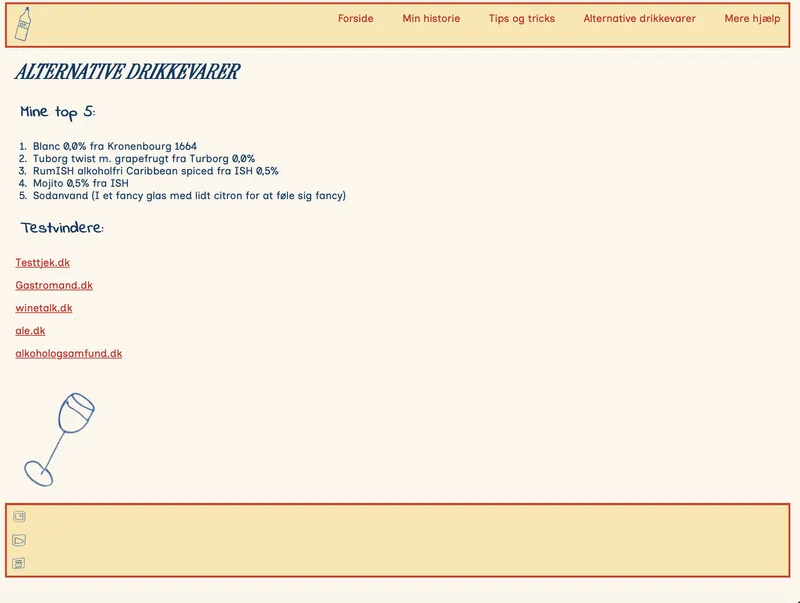
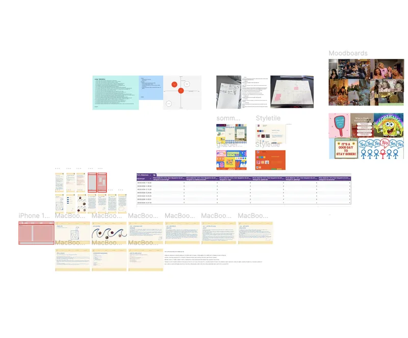

tema 3- grundlæggende UX/UI
Under tema 3 lærte vi, hvordan research, observationer og brugertests kan anvendes til at forbedre et website og tilpasse det til en specifik målgruppe. Fokus var i høj grad på designprocessen og på at forstå brugernes behov, før man begyndte
at udvikle selve løsningen. Vi blev introduceret til designbriefs, som bruges til at beskrive et projekt og skabe en fælles forståelse af formål, målgruppe og visuel retning.
Derudover arbejdede vi med user stories, som hjælper med at
identificere, hvilke funktioner og muligheder målgruppen har brug for på et website. Dette gav en bedre forståelse af, hvordan man designer med udgangspunkt i brugernes behov frem for egne antagelser.
Som en del af designprocessen lærte
vi forskellige metoder til idéudvikling og visualisering, herunder moodboards, styletiles og prototyper. Disse værktøjer gjorde det muligt at udvikle og afprøve designidéer, før de blev implementeret. Efterfølgende gennemførte vi forskellige
tests på vores prototyper for at indsamle feedback fra brugere og foretage justeringer baseret på deres oplevelser og behov.
Denne viden anvendte vi i udviklingen af et emnesite, hvor vi selv kunne vælge emnet. For første gang arbejdede
vi systematisk med research og test af designidéer, inden vi begyndte at udvikle det færdige website. Det gav mig en bedre forståelse for værdien af at undersøge og validere idéer tidligt i processen.

rettigheder og figma
I forbindelse med projektet lærte vi også om ophavsret og brugen af billeder og grafisk materiale på websites. Vi fik indsigt i, hvilke ressourcer man lovligt kan anvende, og hvilke muligheder der findes for selv at producere indhold. Derfor
valgte jeg at anvende håndtegnede illustrationer på mit emnesite, hvilket både gav sitet et personligt udtryk og sikrede, at alt visuelt materiale var mit eget. Temaet gav desuden en grundig introduktion til Figma, som blev et vigtigt værktøj
i designprocessen.
For første gang brugte jeg betydelig tid på research, idéudvikling og prototyper, inden jeg begyndte at kode. Det betød, at projektet i højere grad handlede om design og brugeroplevelse end om den tekniske implementering. Gennem arbejdet med
emnesitet blev jeg opmærksom på en personlig udfordring i designprocessen.
Jeg opdagede, at det nogle gange kan være svært for mig at give slip på mine egne idéer og præferencer, når de ikke stemmer overens med målgruppens behov.
Projektet lærte mig derfor, at godt design ikke nødvendigvis handler om, hvad jeg selv synes er bedst, men om at skabe en løsning, der fungerer optimalt for brugerne.

